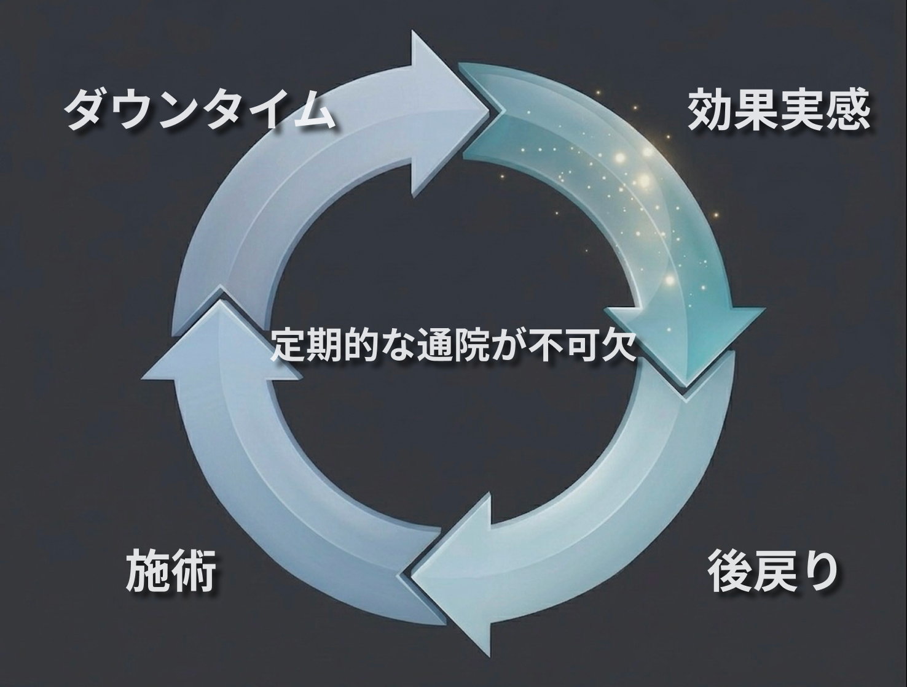
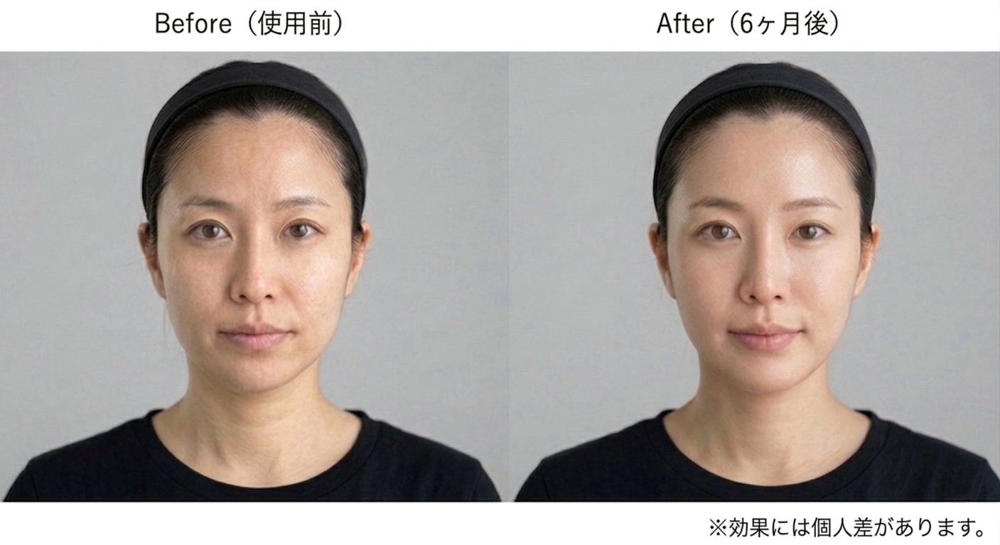

これは、
全く新しい美顔器。
美容医療と自宅ケアの“間”を埋める、新しい選択。
DERMAVANCE TRINITY-X
必要なのは、
“間を埋めるケア”
健康的な肌状態を保つために大切なのは、施術の効果を“持続させる構造”です。
医療用の機械を用いての治療は、家庭用製品でのケアと比べて一度で効果実感が得られやすいとされています。
しかし、その効果は時間とともに緩やかに減少します。
必要なのは“点”ではなく、“線のケア”です。

あなた自身の肌を育てる。
その日のコンディションに合わせて、
自分のリズムで、必要なケアを選ぶ。
それは、毎日のスキンケアの延長。
日常の中で、肌を整えていく。
その積み重ねが、
結果として“崩れにくい状態”をつくる。
それを可能にするのが、
DERMAVANCE TRINITY-X。
自宅で行うケアの概念を、再定義します。
通わずに、整える。
1回約10分。
予約不要。移動不要。
忙しい日常の中でも、必要なケアを途切れさせない。
時間に縛られない美容という選択。
製品の特徴
なぜ、
ここまでできるのか。

DERMAVANCE TRINITY-Xは、5つの主要技術を統合しています。
選び抜かれた作用を組み合わせることで、単一機能では得られない変化を生み出します。
印象だけを、
確かに引き上げる。
肌状態は、単発の処置ではなく継続的なケアによって維持されます。
DERMAVANCE TRINITY-Xは、クリニックでのケアを補完し、施術効果を持続化させる使い方にも、ホームケア単体で完結させる使い方にも対応します。
ビフォーアフター症例写真

「続けられる設計が、10年後の差をつくる。」
続けられる仕組み①
続けられる仕組み②
空間に溶け込むプロダクト
眺めていたくなる、細部までこだわり抜いたデザイン。